Synthetic static sketches · 29 October 2026 · Approval pending. These captures do not verify implemented behavior.
Open interactive sketches · Specification · Native A4 PDF · Layout/accessibility/interaction checks
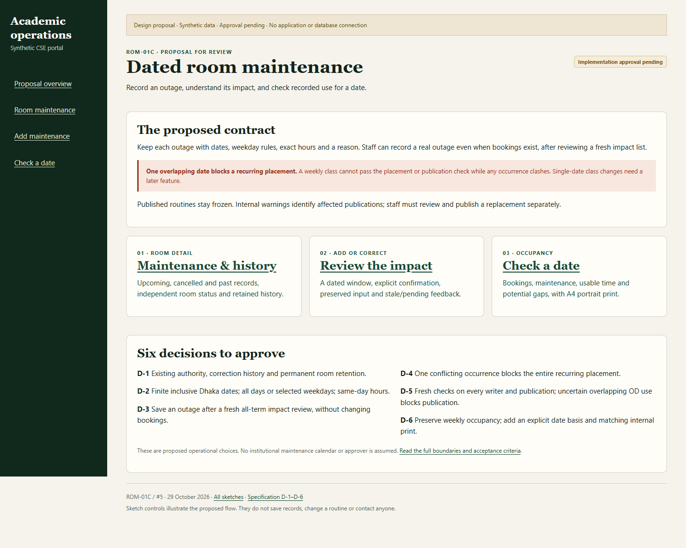
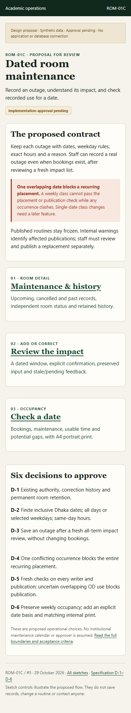
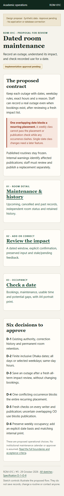
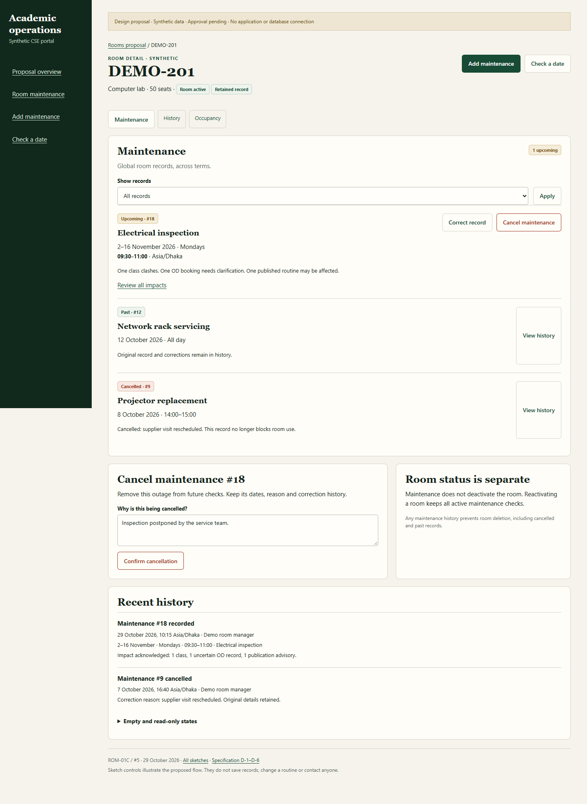
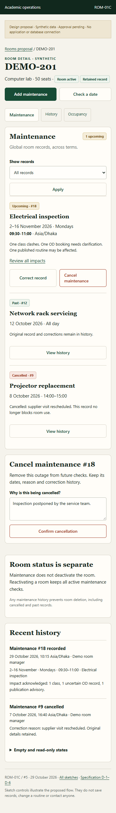
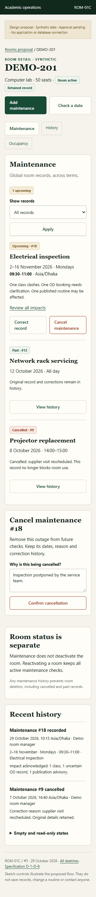
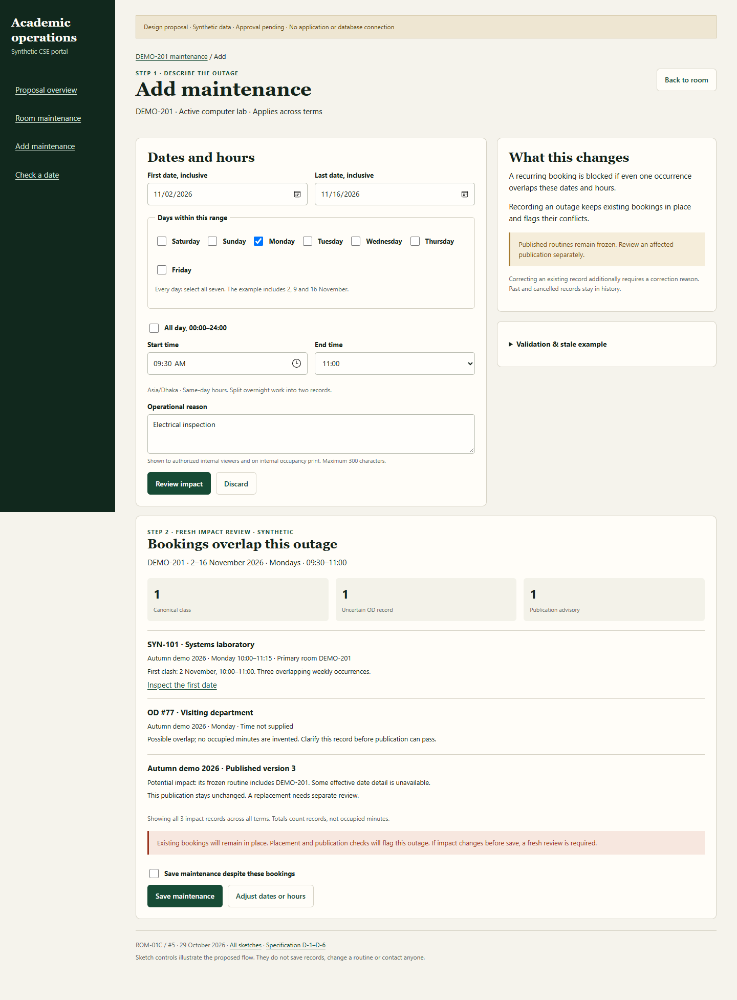
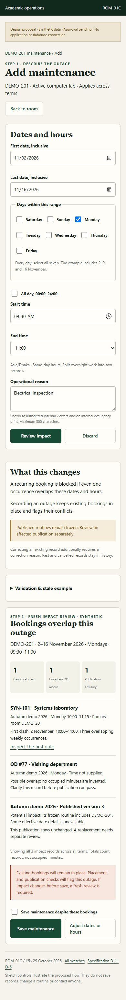
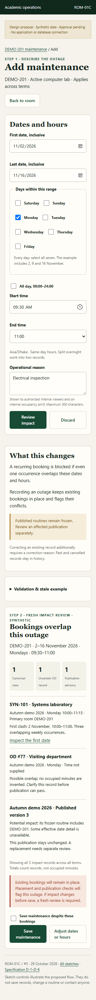
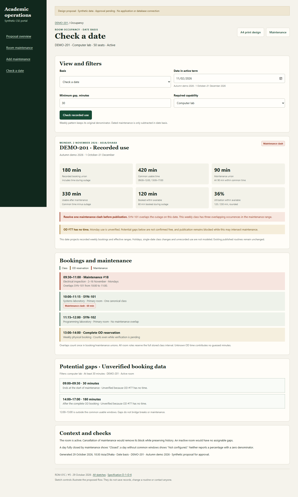
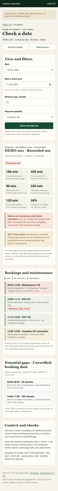
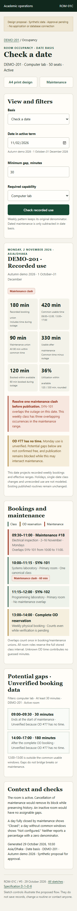